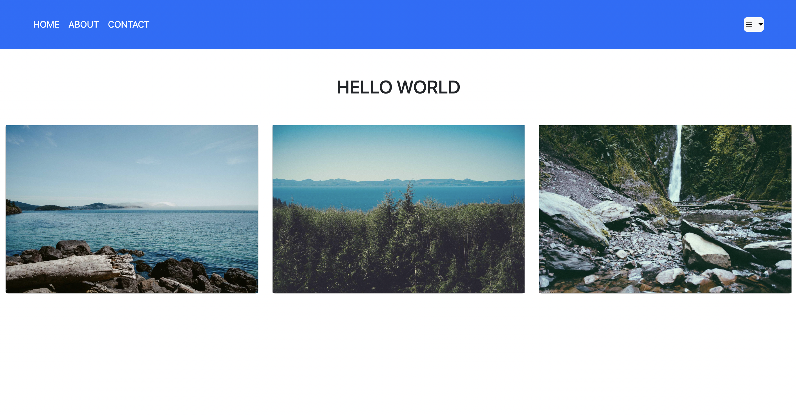
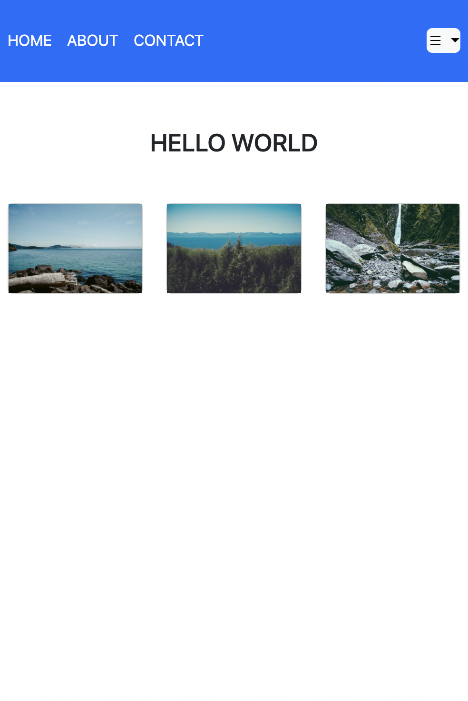

In the last few weeks, I experienced Bootstrap for the first time. Although I have used a JavaScript framework (jQuery) before, this was my first time using a CSS framework. Despite knowing that it is difficult to master Bootstrap, I was eager to learn about it as frameworks are extensively used in software engineering. After learning the basics of Bootstrap, it came as no surprise that I found a few things that why I think Bootstrap will benefit software engineers.
One of the most beneficial things I think a software engineer might get out of Bootstrap is the ability to build mobile-first/responsive websites easily. I have personally built a responsive website before using only CSS, but I always found writing separate CSS code for different screen sizes to be time consuming. However, with Bootstrap, there is no need to write separate CSS code for different screen sizes as the framework is already designed to adjust sizes automatically, which I find extremely convenient.
To demonstrate, here is a simple webpage that I built using Bootstrap:


As shown in the images above, the contents of the webpage are adjusted automatically according to its screen size. And as one can see from the code, only a few Bootstrap keywords have been added to the HTML file. This is not possible with raw CSS and I find this feature of Bootstrap to be extremely powerful.
Another beneficial thing that I found about Bootstrap is that it allows websites to have the same look and feel as other popular websites with good designs. This is not surprising as Bootstrap was originally developed by Twitter to have common design patterns within the company. I personally find this to be extremely useful, as I believe that clients want designs that are aesthetically pleasing to many, and not designs that are aesthetically pleasing to the programmer. Although this may sound a bit anti-creative, I believe it is sometimes best to suppress programmer’s own taste to have a good design, and with Bootstrap, programmers can rely on the designs that were built by a successful company, which I think many find aesthetically pleasing.
Although there are a lot of great things about Bootstrap, there are a few things that still make me want to go back to just using raw CSS. One of the reasons is that Bootstrap is not easy to learn. I think this is partly because it is different from how most programmers are used to styling websites—that is, in Bootstrap, styling is done by adding predefined keywords to a class of each HTML tag. This requires a lot of memorization of the keywords and many visits to the Bootstrap documentation. However, once a programmer masters the keywords, I believe this characteristic of applying directly to HTML elements’ class is more advantageous than styling from a stylesheet using only CSS, as all styling can be done in the HTML file with only simple keywords while examining the HTML code, which I believe will make it a lot easier to keep track of the code, and thus save time.
In conclusion, I believe every programmer should learn how to use frameworks like Bootstrap as it makes building mobile-first/responsive websites a lot easier, and one can build websites that have the same look and feel more efficiently.